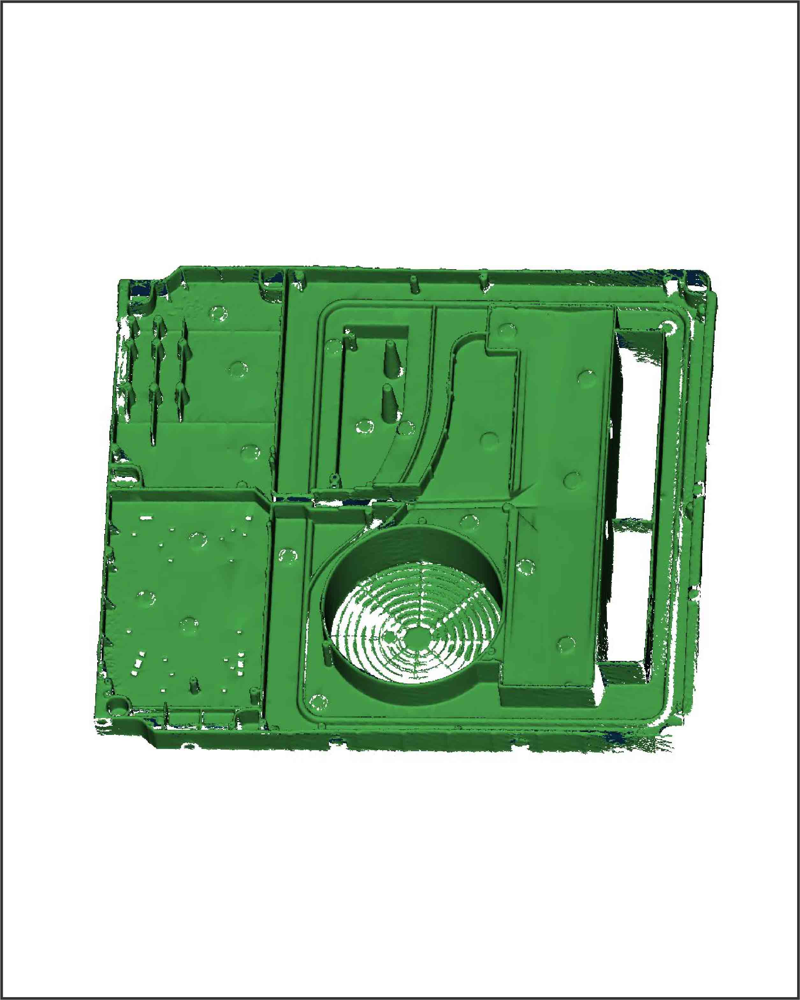

CALIBRY Handheld 3D Scanner
In 2021, my team and I got the most famous product design award in the world - IF DESIGN for the Calibry Handheld 3D Scanner
LINK to IF DESIGN
Calibry is a lightweight 3D scanner designed for digitizing medium to large objects (40 cm to 10 m in length). It was designed to make professional quality available to engineers, healthcare professionals and educators. Calibry has a built-in texture camera and can capture up to 3 million points per second. This guarantees users a fast and accurate result (up to 0.1 mm).


Engineering tasks
engineering composition and planning of the structure;
support the development of the ergonomic design;
design a lightweight case of the device;
choose the materials for the case;
optimize the number of scanner case parts;
make the device easy to assemble;
ensure rigid and secure assembly;
provide secure fixation of the external USB connector;
design engineering of 3D-scanner’s handle;
engineering support for industrial designers;
supporting other engineers in developing the body with optics;
optimization parts for injection molding;
making a prototype with FDM and SLA 3D-printers;
engineering support for contract manufacturing in China
Engineering process
The body has a minimum number of joints of parts, fasteners. It is technologically advanced and inexpensive to manufacture.
Vibrations on the device body are not transmitted to the optics, thus the scanning accuracy is maximized.
The bracket design has the ability to be made both by metal molding and by milling. Optics and all electronic components can be assembled on a pre-calibration bracket prior to the final assembly.
All parts of the 3D-scanner are made of ABS-plastic, except for the bracket and the control button. The bracket is made of aluminum for safe fixing of the optics and PCBs. The control button is made of TPU-resin pleasant to the touch.
The assembly of the handle is fixed to the optics body with 6 screws. The halves are assembled on latches and clamp the internal electronics in their grooves. After installation, the front panel is assembled on snap-fits to the handle.
The cases of the handle have a USB connector. For secure fixing, it contains two molded-in threaded inserts, that are set into the mold before the mold shooting.
Functional prototype development
The prototype is made with the FDM (for big parts) and SLA (for small parts) 3D-printers
The first moldings to check assembly before starting mass production
To sum up
At my last work, ART UP Studio, I use the 3D scanner in every project of our studio. In practice, we are convinced of its well-thought-out ergonomics, quality, and an attractive appearance.
The company Thor3D is appreciative of our work. Calibry won the IF DESIGN AWARD 2021. Also, the scanner has many excellent reviews from European bloggers, such as Kerry Stevenson, founder of Fabbaloo portal.